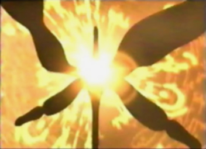

A question that arises
when thinking of the panzer language is: what exactly does the writing
look like. In Panzer Dragoon Saga, when you first enter the caravan, you
will notice a wagon next to the entrance of the item shop. When examining
the front of the wagon, a message will appear saying, (the name Enkak
is carved here). The front of the wagon has a symbol that looks like a
series of different shapes. Could this be the way Enkak is written in
panzer language? Even the Item shop tent, the pink, purple, and blue banners,
the provisions, bedding, tools, spices, and the hunting equipment boxes,
have a series of symbols on them. I haven't the slightest clue as to what
the item shop tent and banner symbols might say, because you cant examine
them. Could the symbols on the boxes actually be panzer writing? In the
Liberal district in the town of Zoah, a unique symbol can be seen on the
entrance to the item shop. Is this the symbol for item shop? Also in the
Liberal District you can find a series of marked walls. These various
markings on the walls surrounding the firewood, my just be actual Panzer
writing, possibly written by children or even Bezer. They may even be
a form of Panzerese graffiti! In the Holy District you will find Quitor
walking around and on the front of his shirt, is another odd symbol. In
the Seekers Stronghold an assortment of similar symbols can also be found.
The main entrance looks to have a Japanese like symbol on the door. There
are two kinds of banners which can be found hanging above the many doors
in the stronghold, each containing a unique and interesting symbol. In
Panzer Dragoon Orta another form of unique writing can be found, moving
throughout level 7 Forbidden Memories, inside the Sestren network. It
can be closely compared to the writing within the Sestren network, in
Panzer Dragoon Saga. This writing looks very different from the symbols
found throughout Panzer Dragoon Saga. Could this be the true Panzer text
that the ancients used? What I can conclude from this is: with the downfall
of the ancient civilization, the band of humans that survived, lost the
knowledge of how to write the ancient text or did away with it altogether,
in favor of a new form of writing. Maybe to the survivors, it was a way
to start over, to put the wretched past behind them. The survivors reinvented
the panzer writing, and it eventually developed into the writing I mentioned
in Panzer Dragoon Saga, a series of shapes and symbols. The writing found
in Sestren, level 7 of Panzer Dragoon Orta, as well as the Sestren network
within Panzer Dragoon Saga, could have been a way for the ancients to
leave behind the true Panzer text, for future generations to find and
interpret. Do these shapes and symbols have any meaning? Are they nothing
but nonsense, a series of many different shapes? These symbols may very
well be what the panzer writing looks like. Most of these symbols are
on many of the things you can examine in Panzer Dragoon Saga. When you
get an explanation on what you examine, it feels like the game is translating
the symbols for you. So have we finally found the answer to what the panzer
writing actually looks like? We might very well have.

In Panzer Dragoon Orta another form of unique writing can be found, moving throughout level 7 Forbidden Memories

It can be closely compared to the writing within the Sestren network, in Panzer Dragoon Saga.